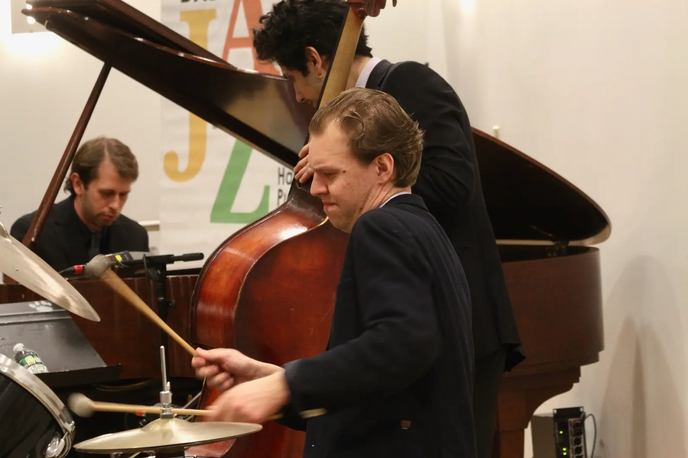

New York City jazz band
Jazz and
the City.
Who we are
Artists first.
Jazz & The City Band is a New York City–based jazz band made up of dedicated, specialized musicians who have devoted their lives to jazz.
We are artists first — not an entertainment company and not a jack-of-all-trades ensemble.
Meet the band
What we do
True New York jazz.
We bring the sound of true New York jazz to every event we play — from elegant weddings and cocktail hours to corporate events and private celebrations.
When you hire Jazz & The City Band, you work directly with the musicians creating the music, avoiding the inflated costs and intermediaries of large entertainment companies.
The result is authentic live jazz, performed at the highest level, with clarity, flexibility, and exceptional value.
Book the bandListen
Recent performances.
Misty · Not So Bluesy After All · The Man I Love · Desafinado · On The Street Where You Live